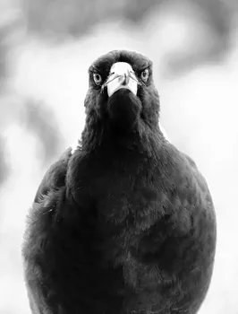

Player, I defy thee

Hace cosa de un mes que me propuse ver la antología completa de True Detective. El universo que propone la franquicia me dejó con la sensación de haber visto algo muy (muy) bueno, pero que en ocasiones se arrastra y le cuesta mantener el ritmo. Así que dadle una oportunidad bajo vuestra propia responsabilidad.
Si tuviera que hacer un ranking, lo tendría muy difícil: la química entre Woody Harrelson y Matthew McConaughey es fabulosa en la primera temporada; la tercera, en cambio, es soberbia en su manera de reflejar la fragilidad de la memoria a través de la estructura en tres tiempos. En la cuarta respiras la misma asfixiante normalidad con la que los personajes conviven con la muerte: morir es una parte más del paisaje, una factura más que pagar por vivir en Alaska.
¿Y la segunda? Creo que fue una excelente oportunidad para que aprendieran de los errores.
Magpie
En los créditos finales del primer capítulo de la cuarta temporada suena Magpie (1), una versión de The Unthanks del tema de Davey Dodds (2). El peso de la melodía cae sobre las voces de las hermanas Becky y Rachel Unthanks, acompañadas al desnudo por el zumbido de un ¿órgano? ejecutado por Adrian McNally.
La canción suena a superstición, a un tiempo oscuro y te traslada a un sitio lluvioso e inquietante; donde lo repulsivo y lo atractivo se mezclan de ordinario. Mi listening no es gran cosa, pero me las apañé para pillar el estribillo:
One's for sorrow, two's for joy
Three's for a girl and four's for a boy
Five's for silver, six for gold
Seven's for a secret never told
(X3) Devil, devil, I defy thee.
Al escucharlo pensé "jo, ¡qué chulada!" y "menos mal que no pulsé Next". Busqué la letra entera y me parece maravillosa: canta a lo complejo que es el mundo realmente, a que nada es tan sencillo como queremos creer. El título ya es toda una declaración de intenciones: la urraca, si no recuerdo mal, es un símbolo de dualidad por su plumaje negro y blanco. En los versos de la canción nos dice que trae "nuevas / buenas y malas", "sabe cuándo iremos a la tumba /y cómo naceremos".
No se queda ahí: sorrow/girl/silver versus joy/boy/gold. O "joy when from the right / Grief when from the left". La urraca se mueve entre mundos, entre la astucia del cuervo y la sabiduría del búho. Para el sacerdote es el pájaro del diablo; para la comunidad, una parte de las viejas costumbres y parte del devenir natural de la naturaleza.
¿Y si lo aprovechamos?
Tras darle todas estas vueltas, pensé que todo este rollo pide a gritos mesa, fichas y dados. Quizás podría aprovecharlo para alguna ambientación, una semilla de partida o incluso algún personaje relevante.
Una forma perfecta de aprovecharlo es trasladar esa atmósfera a una partida: imaginar la supervivencia real de esa gente en el norte de Europa, donde la lluvia no cesa, el barro cubre hasta las paredes y el frío se clava en los huesos. Para vivir en una aparente tranquilidad, estos campesinos tragan con todo eso y más: soportan impuestos abusivos, aguantan las monsergas del cura y asumen la miseria como una vecina más.
Sin embargo, hay una línea roja. Es una comunidad tejida por supersticiones tan viejas y arraigadas que, aunque a ojos de los visitantes parezcan absurdas, son el cimiento de su existencia. Y es ahí donde reside el peligro: para defender sus creencias (invisibles, vitales, letales) esa gente es capaz de invocar al mismo demonio.
NB: Me chivan que sale también en serie británica de la BBC Detectorists. No la he visto, ya me dirán ustedes qué tal.
(1): Lo encuentras en Apple Music
(2): Puedes escucharla tanto en Youtube como en Apple Music